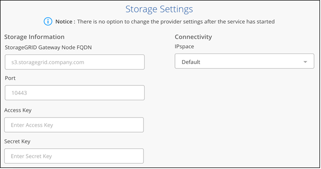
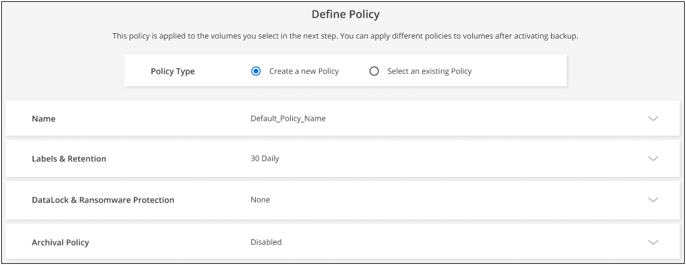
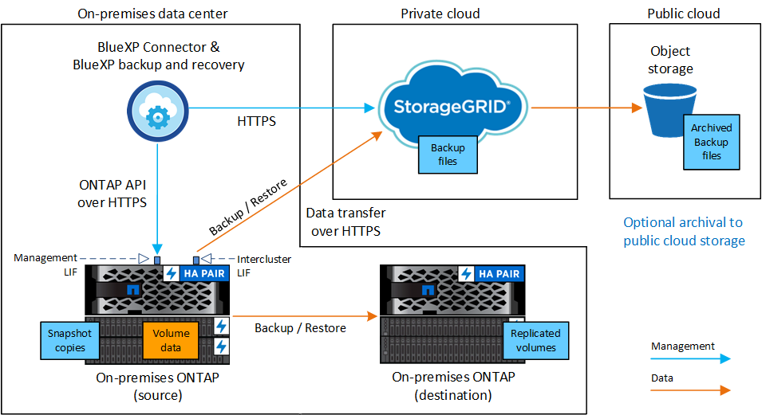

Amazon Web Services
Amazon Web Services
 Google Cloud
Google Cloud
 Microsoft Azure
Microsoft Azure
 Richiedi modifiche alla documentazione
Richiedi modifiche alla documentazione Modifica questa pagina
Modifica questa pagina Scopri come collaborare
Scopri come collaborareBackup dei dati ONTAP on-premise su StorageGRID
Collaboratori
Completa alcuni passaggi per iniziare a eseguire il backup dei dati dei volumi dai sistemi ONTAP on-premise allo storage a oggetti nei tuoi sistemi NetApp StorageGRID.
I "sistemi ONTAP on-premise" includono i sistemi FAS, AFF e ONTAP Select.
Avvio rapido
Inizia subito seguendo questi passaggi o scorri verso il basso fino alle sezioni rimanenti per ottenere dettagli completi.
 Verificare il supporto per la configurazione
Verificare il supporto per la configurazione-
Il cluster on-premise è stato scoperto e aggiunto a un ambiente operativo in BlueXP. Vedere "Alla scoperta dei cluster ONTAP" per ulteriori informazioni.
-
Il cluster esegue ONTAP 9.7P5 o versione successiva.
-
Il cluster dispone di una licenza SnapMirror, inclusa nel Premium Bundle o nel Data Protection Bundle.
-
Il cluster deve disporre delle connessioni di rete necessarie a StorageGRID e al connettore.
-
-
Hai un connettore installato in sede.
-
Il connettore può essere installato in un sito con o senza accesso a Internet.
-
La rete per il connettore consente una connessione HTTPS in uscita al cluster ONTAP e a StorageGRID.
-
-
Hai acquistato "e attivato" Una licenza BYOL di backup e ripristino BlueXP di NetApp.
-
StorageGRID dispone della versione 10.3 o successiva con chiavi di accesso che dispongono delle autorizzazioni S3.
 Abilitare il backup e il ripristino BlueXP sul sistema
Abilitare il backup e il ripristino BlueXP sul sistemaSelezionare l’ambiente di lavoro ONTAP di origine e fare clic su Enable > Backup Volumes (Abilita > volumi di backup) accanto al servizio di backup e ripristino nel pannello di destra, quindi seguire la procedura di installazione guidata.

 Inserire i dettagli del StorageGRID
Inserire i dettagli del StorageGRIDSelezionare StorageGRID come provider, quindi immettere i dettagli del server StorageGRID e dell’account del tenant S3. È inoltre necessario specificare IPSpace nel cluster ONTAP in cui risiedono i volumi.

 Definire il criterio di backup predefinito
Definire il criterio di backup predefinitoIl criterio predefinito esegue il backup dei volumi ogni giorno e conserva le 30 copie di backup più recenti di ciascun volume. Passare a backup orari, giornalieri, settimanali, mensili o annuali, in alternativa, selezionare una delle policy definite dal sistema che fornisca più opzioni. È inoltre possibile modificare il numero di copie di backup che si desidera conservare.
Se il tuo cluster utilizza ONTAP 9.12.1 o versione successiva e il tuo sistema StorageGRID utilizza la versione 11.4 o superiore, puoi scegliere di raggruppare i backup più vecchi in Tier di archivio del cloud pubblico dopo un certo numero di giorni per un’ulteriore ottimizzazione dei costi. Attualmente il supporto è per i Tier di storage AWS S3 Glacier/S3 Glacier Deep Archive o Azure Archive.
Se il cluster utilizza ONTAP 9.11.1 o versione successiva, è possibile scegliere di proteggere i backup da attacchi ransomware e di eliminazione configurando una delle impostazioni DataLock e ransomware Protection. "Scopri di più sulle impostazioni di configurazione dei criteri di backup e ripristino di BlueXP disponibili".

 Selezionare i volumi di cui si desidera eseguire il backup
Selezionare i volumi di cui si desidera eseguire il backupIdentificare i volumi di cui si desidera eseguire il backup utilizzando il criterio di backup predefinito nella pagina Select Volumes (Seleziona volumi). Se si desidera assegnare criteri di backup diversi a determinati volumi, è possibile creare criteri aggiuntivi e applicarli ai volumi in un secondo momento.
Un bucket S3 viene creato automaticamente su StorageGRID nell’account di servizio indicato dalla chiave di accesso S3 e dalla chiave segreta inserita e i file di backup vengono memorizzati in tale account.
Requisiti
Leggere i seguenti requisiti per assicurarsi di disporre di una configurazione supportata prima di iniziare il backup dei volumi on-premise su StorageGRID.
L’immagine seguente mostra ogni componente durante il backup di un sistema ONTAP on-premise su StorageGRID e le connessioni necessarie per prepararlo tra di loro.

Quando il connettore e il sistema ONTAP on-premise sono installati in una posizione on-premise senza accesso a Internet (un "sito oscuro"), il sistema StorageGRID deve essere situato nello stesso data center on-premise. L’archiviazione di file di backup meno recenti nel cloud pubblico non è supportata nelle configurazioni di siti oscuri.
Preparazione dei cluster ONTAP
Prima di avviare il backup dei dati dei volumi, è necessario individuare i cluster ONTAP on-premise in BlueXP.
- Requisiti ONTAP
-
-
Minimo di ONTAP 9.7P5; si consiglia ONTAP 9.8P13 e versioni successive.
-
Una licenza SnapMirror (inclusa nel Premium Bundle o nel Data Protection Bundle).
Nota: il "Hybrid Cloud Bundle" non è richiesto quando si utilizza il backup e ripristino BlueXP.
Scopri come "gestire le licenze del cluster".
-
L’ora e il fuso orario sono impostati correttamente.
Scopri come "configurare l’ora del cluster".
-
- Requisiti di rete del cluster
-
-
Il cluster ONTAP avvia una connessione HTTPS su una porta specificata dall’utente dal LIF dell’intercluster al nodo gateway StorageGRID per le operazioni di backup e ripristino. La porta è configurabile durante la configurazione del backup.
ONTAP legge e scrive i dati da e verso lo storage a oggetti. Lo storage a oggetti non viene mai avviato, ma risponde.
-
ONTAP richiede una connessione in entrata dal connettore alla LIF di gestione del cluster. Il connettore deve risiedere in sede.
-
Su ogni nodo ONTAP che ospita i volumi di cui si desidera eseguire il backup è richiesta una LIF intercluster. La LIF deve essere associata a IPSpace che ONTAP deve utilizzare per connettersi allo storage a oggetti. "Scopri di più su IPspaces".
Quando si imposta il backup e il ripristino di BlueXP, viene richiesto di utilizzare IPSpace. È necessario scegliere l’IPSpace a cui ciascun LIF è associato. Potrebbe trattarsi dell’IPSpace "predefinito" o di un IPSpace personalizzato creato.
-
I LIF intercluster dei nodi possono accedere all’archivio di oggetti (non necessario quando il connettore viene installato in un sito "buio").
-
I server DNS sono stati configurati per la VM di storage in cui si trovano i volumi. Scopri come "Configurare i servizi DNS per SVM".
-
Se si utilizza un IPSpace diverso da quello predefinito, potrebbe essere necessario creare un percorso statico per accedere allo storage a oggetti.
-
Aggiornare le regole del firewall, se necessario, per consentire le connessioni del servizio di backup e ripristino BlueXP da ONTAP allo storage a oggetti attraverso la porta specificata (in genere la porta 443) e il traffico di risoluzione dei nomi dalla VM di storage al server DNS tramite la porta 53 (TCP/UDP).
-
Preparazione di StorageGRID
StorageGRID deve soddisfare i seguenti requisiti. Vedere "Documentazione StorageGRID" per ulteriori informazioni.
- Versioni di StorageGRID supportate
-
È supportato StorageGRID 10.3 e versioni successive.
Per utilizzare la protezione DataLock e ransomware per i backup, i sistemi StorageGRID devono disporre della versione 11.6.0.3 o superiore.
Per eseguire il tiering dei backup più vecchi nello storage di archiviazione cloud, i sistemi StorageGRID devono eseguire la versione 11.3 o superiore. Inoltre, i sistemi StorageGRID devono essere rilevati in BlueXP Canvas.
- Credenziali S3
-
È necessario aver creato un account tenant S3 per controllare l’accesso allo storage StorageGRID. "Per ulteriori informazioni, consultare la documentazione di StorageGRID".
Quando si imposta il backup su StorageGRID, la procedura guidata di backup richiede una chiave di accesso S3 e una chiave segreta per un account tenant. L’account tenant consente al backup e ripristino BlueXP di autenticare e accedere ai bucket StorageGRID utilizzati per memorizzare i backup. Le chiavi sono necessarie in modo che StorageGRID sappia chi sta effettuando la richiesta.
Queste chiavi di accesso devono essere associate a un utente che dispone delle seguenti autorizzazioni:
"s3:ListAllMyBuckets", "s3:ListBucket", "s3:GetObject", "s3:PutObject", "s3:DeleteObject", "s3:CreateBucket" - Versione degli oggetti
-
Non è necessario attivare manualmente la versione degli oggetti StorageGRID nel bucket dell’archivio di oggetti.
Creazione o commutazione di connettori
Quando si esegue il backup dei dati su StorageGRID, è necessario che sia disponibile un connettore BlueXP on-premise. È necessario installare un nuovo connettore o assicurarsi che il connettore attualmente selezionato risieda on-premise. Il connettore può essere installato in un sito con o senza accesso a Internet.
Requisiti di rete del connettore
Assicurarsi che la rete in cui è installato il connettore abiliti le seguenti connessioni:
-
Una connessione HTTPS tramite la porta 443 al nodo gateway StorageGRID
-
Una connessione HTTPS sulla porta 443 alla LIF di gestione del cluster ONTAP
-
Una connessione Internet in uscita tramite la porta 443 per il backup e ripristino di BlueXP (non necessaria quando il connettore viene installato in un sito "buio")
Considerazioni sulla modalità privata (sito scuro)
-
La funzionalità di backup e ripristino BlueXP è integrata nel connettore BlueXP. Una volta installato in modalità privata, è necessario aggiornare periodicamente il software del connettore per accedere alle nuove funzioni. Controllare "Novità di BlueXP per backup e ripristino" Per visualizzare le nuove funzionalità di ogni versione di backup e ripristino di BlueXP. Per utilizzare le nuove funzioni, seguire i passaggi da a. "Aggiornare il software del connettore".
-
Quando si utilizza il backup e ripristino BlueXP in un ambiente SaaS, viene eseguito il backup dei dati di configurazione di backup e ripristino BlueXP nel cloud. Quando si utilizza il backup e ripristino BlueXP in un sito senza accesso a Internet, il backup dei dati di configurazione di backup e ripristino BlueXP viene eseguito nel bucket StorageGRID in cui vengono memorizzati i backup. Se si verifica un errore del connettore nel sito in modalità privata, è possibile "Ripristinare i dati di backup e ripristino di BlueXP su un nuovo connettore".
Preparazione all’archiviazione dei file di backup meno recenti nello storage di cloud pubblico
Il tiering dei file di backup più vecchi nello storage di archiviazione consente di risparmiare denaro utilizzando una classe di storage meno costosa per i backup che potrebbero non essere necessari. StorageGRID è una soluzione on-premise (cloud privato) che non fornisce storage di archiviazione, ma è possibile spostare i file di backup meno recenti nello storage di archiviazione del cloud pubblico. Quando vengono utilizzati in questo modo, i dati che vengono trasferiti allo storage cloud o ripristinati dallo storage cloud, vanno tra StorageGRID e lo storage cloud - BlueXP non è coinvolto in questo trasferimento di dati.
Il supporto attuale consente di archiviare i backup nello storage AWS S3 Glacier/S3 Glacier Deep Archive o Azure Archive.
Requisiti ONTAP
-
Il cluster deve utilizzare ONTAP 9.12.1 o versione successiva
Requisiti StorageGRID
-
StorageGRID deve utilizzare 11.4 o una versione successiva
-
Il StorageGRID deve essere "Scoperta e disponibile in BlueXP Canvas".
Requisiti Amazon S3
-
Dovrai creare un account Amazon S3 per lo spazio di storage in cui verranno archiviati i backup.
-
È possibile scegliere di eseguire il Tier dei backup nello storage AWS S3 Glacier o S3 Glacier Deep Archive. "Scopri di più sui Tier di archiviazione AWS".
-
StorageGRID deve avere accesso completo al bucket (
s3:*); tuttavia, se ciò non è possibile, il criterio bucket deve concedere le seguenti autorizzazioni S3 a StorageGRID:-
s3:AbortMultipartUpload -
s3:DeleteObject -
s3:GetObject -
s3:ListBucket -
s3:ListBucketMultipartUploads -
s3:ListMultipartUploadParts -
s3:PutObject -
s3:RestoreObject
-
Requisiti di Azure Blob*
-
È necessario iscriversi a un abbonamento Azure per lo spazio di storage in cui verranno collocati i backup archiviati.
-
L’attivazione guidata consente di utilizzare un gruppo di risorse esistente per gestire il container Blob che memorizzerà i backup oppure di creare un nuovo gruppo di risorse.
Quando si definiscono le impostazioni di archiviazione per il criterio di backup del cluster, immettere le credenziali del provider cloud e selezionare la classe di storage che si desidera utilizzare. Il backup e ripristino BlueXP crea il bucket cloud quando si attiva il backup per il cluster. Di seguito sono riportate le informazioni necessarie per lo storage di archiviazione AWS e Azure.

Le impostazioni dei criteri di archiviazione selezionate genereranno un criterio ILM (Information Lifecycle Management) in StorageGRID e aggiungeranno le impostazioni come "regole". Se esiste già un criterio ILM attivo, verranno aggiunte nuove regole al criterio ILM per spostare i dati nel livello di archiviazione. Se esiste un criterio ILM esistente nello stato "proposto", non sarà possibile creare e attivare un nuovo criterio ILM. "Scopri di più sulle policy e le regole ILM di StorageGRID".
Requisiti di licenza
Prima di attivare il backup e il ripristino BlueXP per il cluster, è necessario acquistare e attivare una licenza BYOL di backup e ripristino BlueXP da NetApp. Questa licenza è destinata all’account e può essere utilizzata su più sistemi.
È necessario il numero di serie di NetApp che consente di utilizzare il servizio per la durata e la capacità della licenza. "Scopri come gestire le tue licenze BYOL".

|
La licenza PAYGO non è supportata quando si esegue il backup dei file su StorageGRID. |
Attivazione del backup e ripristino BlueXP
Abilita backup e ripristino BlueXP in qualsiasi momento direttamente dall’ambiente di lavoro on-premise.
-
Da Canvas, selezionare l’ambiente di lavoro on-premise e fare clic su Enable > Backup Volumes (Abilita > volumi di backup) accanto al servizio di backup e ripristino nel pannello a destra.
Se la destinazione StorageGRID per i backup esiste come ambiente di lavoro in Canvas, è possibile trascinare il cluster nell’ambiente di lavoro StorageGRID per avviare l’installazione guidata.
-
Selezionare StorageGRID come provider, fare clic su Avanti, quindi inserire i dati del provider:
-
L’FQDN del nodo gateway StorageGRID.
-
La porta che ONTAP deve utilizzare per la comunicazione HTTPS con StorageGRID.
-
La chiave di accesso e la chiave segreta utilizzate per accedere al bucket per memorizzare i backup.
-
IPSpace nel cluster ONTAP in cui risiedono i volumi di cui si desidera eseguire il backup. Le LIF intercluster per questo IPSpace devono disporre di accesso a Internet in uscita (non richiesto quando il connettore viene installato in un sito "buio").
La selezione dell’IPSpace corretto garantisce che il backup e ripristino BlueXP possa configurare una connessione da ONTAP allo storage a oggetti StorageGRID.
-
-
Inserire i dettagli del criterio di backup che verranno utilizzati per il criterio predefinito e fare clic su Avanti. È possibile selezionare una policy esistente o crearne una nuova inserendo le selezioni in ciascuna sezione:
-
Immettere il nome del criterio predefinito. Non è necessario modificare il nome.
-
Definire la pianificazione del backup e scegliere il numero di backup da conservare. "Consulta l’elenco delle policy esistenti che puoi scegliere".
-
Se il cluster utilizza ONTAP 9.11.1 o versione successiva, è possibile scegliere di proteggere i backup da attacchi ransomware e di eliminazione configurando DataLock e ransomware Protection. DataLock protegge i file di backup da modifiche o eliminazioni e ransomware Protection esegue la scansione dei file di backup per rilevare eventuali attacchi ransomware nei file di backup. "Scopri di più sulle impostazioni DataLock disponibili".
-
Se il cluster utilizza ONTAP 9.12.1 o versione successiva e il sistema StorageGRID utilizza la versione 11.4 o successiva, è possibile scegliere di raggruppare i backup meno recenti in Tier di archivio del cloud pubblico dopo un certo numero di giorni. Attualmente il supporto è per i Tier di storage AWS S3 Glacier/S3 Glacier Deep Archive o Azure Archive. Scopri come configurare i tuoi sistemi per questa funzionalità.
Importante: se si intende utilizzare DataLock, è necessario attivarlo nel primo criterio quando si attiva il backup e ripristino BlueXP.
-
-
Selezionare i volumi di cui si desidera eseguire il backup utilizzando il criterio di backup definito nella pagina Select Volumes (Seleziona volumi). Se si desidera assegnare criteri di backup diversi a determinati volumi, è possibile creare criteri aggiuntivi e applicarli successivamente a tali volumi.
-
Per eseguire il backup di tutti i volumi esistenti ed eventuali volumi aggiunti in futuro, selezionare la casella "Backup di tutti i volumi esistenti e futuri…". Si consiglia di utilizzare questa opzione per eseguire il backup di tutti i volumi e non è necessario ricordarsi di attivare i backup per i nuovi volumi.
-
Per eseguire il backup solo dei volumi esistenti, selezionare la casella nella riga del titolo (
 ).
). -
Per eseguire il backup di singoli volumi, selezionare la casella relativa a ciascun volume (
 ).
).
-
Se in questo ambiente di lavoro sono presenti copie Snapshot locali per volumi di lettura/scrittura che corrispondono all’etichetta della pianificazione di backup appena selezionata per questo ambiente di lavoro (ad esempio, giornaliero, settimanale, ecc.), viene visualizzato un messaggio aggiuntivo "Export existing Snapshot copies to object storage as backup copies" (Esporta copie Snapshot esistenti nello storage a oggetti come copie di backup). Selezionare questa casella se si desidera copiare tutte le istantanee storiche nello storage a oggetti come file di backup per garantire la protezione più completa per i volumi.
-
-
Fare clic su Activate Backup (attiva backup) per avviare il backup e il ripristino di BlueXP con i backup iniziali di ciascun volume selezionato.
Un bucket S3 viene creato automaticamente nell’account di servizio indicato dalla chiave di accesso S3 e dalla chiave segreta immessa e i file di backup vengono memorizzati in tale account. Viene visualizzata la dashboard di backup del volume, che consente di monitorare lo stato dei backup. È inoltre possibile monitorare lo stato dei processi di backup e ripristino utilizzando "Pannello Job Monitoring (monitoraggio processi)".
Quali sono le prossime novità?
-
È possibile "gestire i file di backup e le policy di backup". Ciò include l’avvio e l’arresto dei backup, l’eliminazione dei backup, l’aggiunta e la modifica della pianificazione di backup e molto altro ancora.
-
È possibile "gestire le impostazioni di backup a livello di cluster". Ciò include la modifica delle chiavi di storage utilizzate da ONTAP per accedere allo storage cloud, la modifica della larghezza di banda della rete disponibile per caricare i backup nello storage a oggetti, la modifica dell’impostazione di backup automatico per i volumi futuri e molto altro ancora.
-
Puoi anche farlo "ripristinare volumi, cartelle o singoli file da un file di backup" A un sistema ONTAP on-premise.